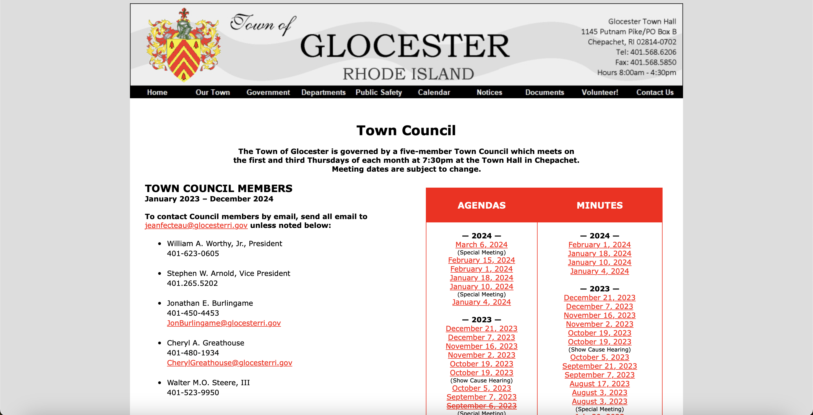
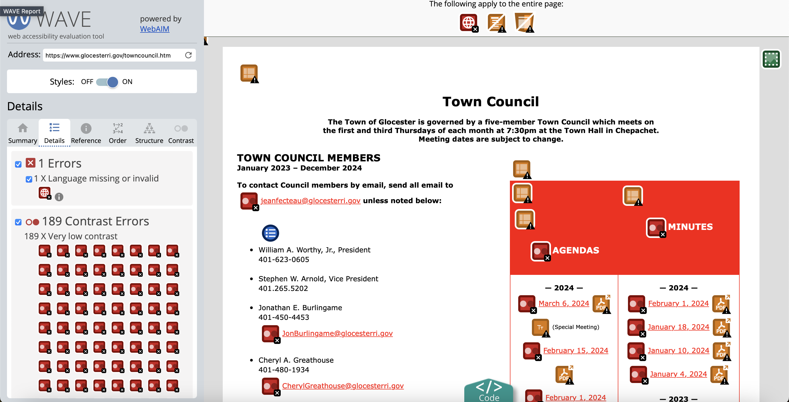

In this section, I picked my website and analyzed its problems,
including those relating to general use as well as accessibility.
Picking a Webpage
Link to the website:
Here
Screenshot (note that the website continues below the screenshot;
navigate to the link to see the page in its entirety):

Why I chose it: Choosing a website was actually somewhat of a
challenge for me, but I followed the advice on the handout and
looked at local government websites, eventualy finding one neaby
Providence; I chose it since the design immediately to me looked to
be in need of improvement, and there was no responsiveness to mobile
use, which I was actually on at the time of finding the website.
Finding Problems
There were some primary issues with this site:
-
In the table for the agendas and minutes the agenda and minutes
documents for a partpicular meeting are not necessarily
horizontally aligned, which can create confusion and unnecessary
extra scanning
-
While there is clear delineation for seperate years, there is none
for months, making it somewhat challenging to locate a specific
month's agenda/minutes
-
There is no responsive redesign for a mobile app, meaning users
are relegated to the same interface whose proportions are not
ideal on a small screen size. This impedes all user types, since
the interface is simply not designed to handle a mobile sized
screen
-
The town administrative information is scattered between the top
and bottom, and it is densely packed without a lot of meta-info
that explains the relevance
All of these problems can lead to issues with learnability,
memorability, and efficiency:
-
Learnability: the interface is relatively simple, although
the problems I brought up could make using the interface to locate
certain agendas/minutes more challenging than necessary
-
Memorability: returning users may have trouble memorizing
the specific place of a certain link to an agenda/minutes document
and then may have to search the entire table again
-
Efficiency: frequent users could have the same troubles as
only semi-frequent returning users, where it is very hard to
memorize the specific location of one of the document links;
additionally, for every new meeting (a semi-monthly event), the
table is shifted downward, further complicating the issue of being
able to remember a specific location
Accessibility
In order to consider accessibility, I generated a WebAIM WAVE
report.
Here is a partial screenshot of part of the report:

Link to the report:
Here
The report emphasizes issues relating to color contrast, especially
as it relates to the links within the table to the agendas/minutes.
Additionally, the color of the email links, being the same, also
does not have sufficient contrast. Just looking at the page, the
contrast does seem insufficient, since the color itself used for the
links is bright and hard to read, making it not ideal for text.
The report also references some other more behind the scenes issues
with the page. No tiered headings (h1, h2, etc.) are used in the
site, which is problematic since those using a screen reader need
those headings to help provide structure to the page so they can
understand it. Additionally, the report noted that the logo image
lacked alt text, another accesssibility issue for individuals who
make use of a screen reader.